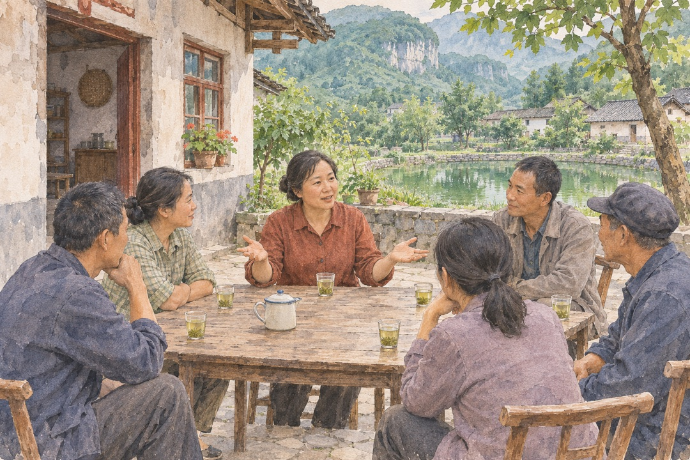

太和街村 · 2022 年
周孝珍把自家让出来评理

太和街村有一回商量水塘的事。有人主张填塘，担心孩子在这里出事，各方的意见却合不拢。出面劝大家各让一步的，是周孝珍。有人当场问她，自己跟邻居的事都争了那么久，怎么来劝别人？
周孝珍确实知道邻里闹僵是什么滋味。她曾经为一块承包地和邻居相争多年。2022 年春，驻村工作队请来村里人，陪双方坐下说这桩旧事。后来村里筹设“评理说事”点，她主动提出，就把其中一处设在自己家。
这回说到水塘，她没有回避那段旧事。她肯放下多年的争执，也肯让出屋边的地方给大家用，在场的人都看在眼里。原先顶她话的当事人也愿意退一步。这场纠纷，就在她家说开了。